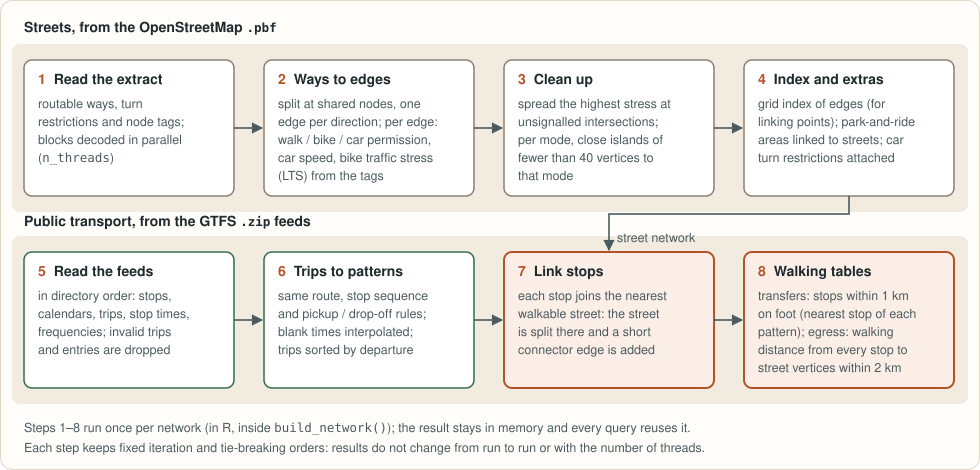
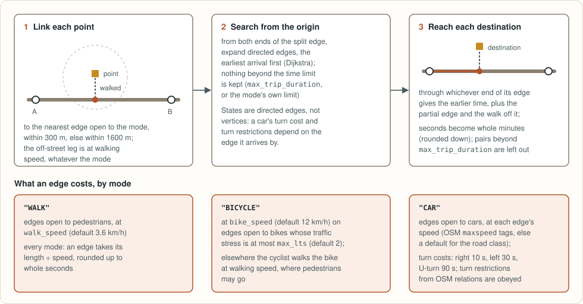
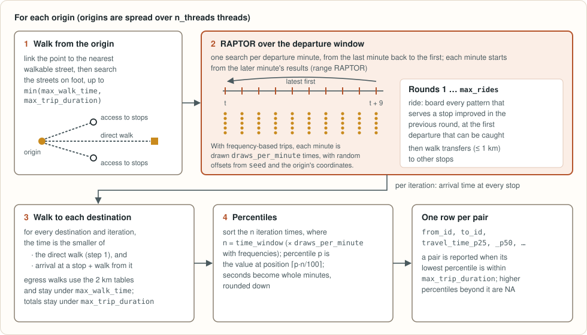
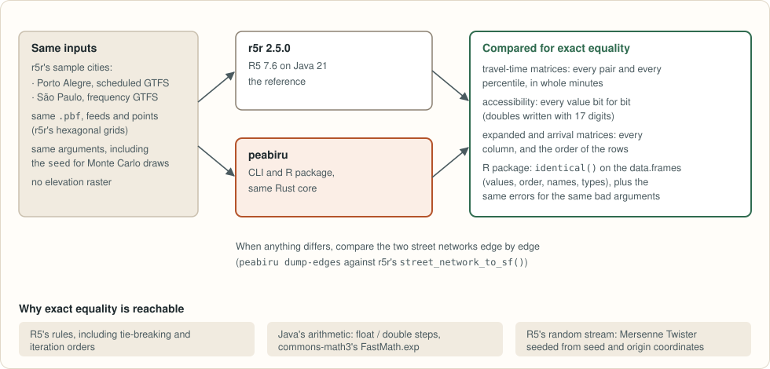

peabiru for Rust


peabiru-core is a multimodal routing engine written in Rust: it builds a
network in memory from an OpenStreetMap extract (.pbf), GTFS public
transport feeds (.zip) and, optionally, an elevation raster (.tif), and
computes travel-time matrices, accessibility, per-trip (expanded and
arrival) matrices, isochrones, detailed itineraries, fares and Pareto
frontiers on it, by walking, cycling, driving and public transport. It is a Rust port of Conveyal’s R5 routing engine.
It needs no Java runtime, keeps nothing on disk, and spreads the origins of
each query over threads.
Authorship. peabiru is an independent project. Its routing model is that of Conveyal’s R5, and its fare calculator and parts of its trip planner are translated from r5r (Ipea); both are MIT-licensed, and their notices are kept in
LICENSE-THIRD-PARTY. peabiru is not affiliated with or endorsed by Conveyal, Ipea or the r5r team. The port was written with the assistance of AI coding tools.
The crate is the engine behind four front-ends:
- the R package
peabiru(its documentation); - the Python package
peabiru(its documentation), which returns pandas data frames; - the JavaScript package
peabiru(its documentation), the crate compiled to WebAssembly, for browsers and Node; - the
peabirucommand-line tool (cratepeabiru-cli), described in The command line.
This guide is for using the crate directly from Rust, and for the command
line. The examples are the files in crates/peabiru-core/examples/ of the
repository, included here verbatim and compiled by cargo build --examples;
they run on the small São Paulo network bundled with the R package.
cargo run --release -p peabiru-core --example transit_matrix
Status
Published on crates.io; this guide follows the repository. Implemented:
- street matrices (walk, bicycle, car), with car turn costs and turn restrictions, and contraction hierarchies that speed up large matrices without changing them;
- public transport matrices: any subset of the transit modes, reached and left on foot, by bicycle or by car, with percentiles and Monte Carlo draws for frequency-based feeds;
- accessibility with five decay functions;
- expanded and arrival matrices;
- isochrones (polygons and street lines);
- detailed itineraries: the fastest trip, or the alternatives;
- fares, travel times within a budget and Pareto frontiers of time and fare;
- slope costs from an elevation raster (Tobler, Minetti);
- scenarios: car speeds and levels of traffic stress changed per call;
- network inspection (snapping, the street and transit networks, service
dates) and the GTFS errors of each feed, with the refusal of feeds with
errors of priority
HIGH; - CSV output, one file per origin.
Not supported: a fare structure that names a fare calculator (a type)
instead of fare rules; it is an error, like every request the crate does
not support. For how the results are checked, see the
comparison with r5r.
The API is a small set of functions and types at the root of the crate; the engine’s internals are private, and the parameter structs are non-exhaustive, so that new fields and functions can be added without breaking your code. It may still change before 1.0. The API reference (rustdoc) documents the current one.
Credits
The routing model follows Conveyal’s R5
(MIT, © Conveyal), from which the routing logic is ported. The fare calculator and parts of
the trip planner are translated from the Java code of
r5r (MIT, © r5r contributors; developed at
Ipea). Polygon isochrones port the
algorithm of the R package isoband (MIT); the exponential of the decay
functions and other numerics are translated from Apache Commons Math 3 (Apache-2.0),
and the trigonometry of the raster projections from fdlibm. The
notices are in LICENSE-THIRD-PARTY.
Getting started
Add the crate
The crate is on crates.io:
[dependencies]
peabiru-core = "0.1"
The minimum supported Rust version is 1.81.
Input data
A network is built from one OpenStreetMap extract in PBF format and, for public transport, any number of GTFS feeds. The convention is a directory holding exactly these files:
data/spo/
├── spo_osm.pbf # streets
├── spo_gtfs.zip # public transport (optional, several allowed)
└── elevation.tif # elevation (optional, read with BuildOptions::elevation)
Files are recognised by their extension in lower case only: a
map.PBF or a feed.ZIP in the directory is ignored.
The examples use r/inst/extdata/spo in the repository, a small network
around Avenida Paulista, in São Paulo (cut from the sample data of the r5r project), with 27
points in spo_points.csv; pass another directory as
the first argument to use your own data.
Build a network
peabiru_core::build_from_dir reads the directory, builds the street
network and the transit layer, links the stops to the streets and finds
the walking transfers between them, and returns a Network:
use peabiru_core::{build_from_dir, BuildOptions};
let network = build_from_dir("r/inst/extdata/spo", &BuildOptions::default())?;
for w in network.build_warnings() {
eprintln!("warning: {w}"); // feeds built from anyway, elevation voids, ...
}
let streets = network.street();
println!("{} vertices, {} edges", streets.n_vertices(), streets.n_edges());
if let Some(transit) = network.transit() {
println!("{} stops in {} feeds", transit.n_stops(), transit.feed_ids().len());
}BuildOptions::default() uses all cores to decode the PBF file; set
n_threads on it to use fewer. The build
fails when a GTFS feed has errors of priority HIGH (set
ignore_gtfs_errors to build what can be read; see
Inspecting a network), and
elevation applies slope costs from a .tif raster in the directory (see
Elevation). For street-only routing,
peabiru_core::build_network(path_to_pbf, &opts) reads just the .pbf.
build_from_bytes builds the same network from the files’ bytes, for
programs without a file system (the JavaScript package uses it).
The network is read-only data in memory: share it between threads by
reference; every query function takes &Network, so the streets and the
public transport layer linked to them always go together. Its contents are
private; network.street() (n_vertices(), bbox(), …) and
network.transit() (n_stops(), feed_reports(), …; None without
GTFS feeds) describe it. Functions that route by public transport return
RouteError::Invalid on a network without it.
Points
Points are (lat, lon) pairs in WGS 84 degrees, in the order you want the
results. Origins and destinations are separate slices; nothing requires them
to be the same.
Parameters
Parameter structs (RouteParams for streets, TransitParams for public
transport, AccessibilityParams, ItineraryParams, BuildOptions) implement Default with
the defaults of the R, Python and JavaScript packages; start from it and set only what
differs:
use peabiru_core::{street_travel_time_matrix, Mode, RouteParams};
let mut params = RouteParams::default();
params.max_trip_duration = 60;
let m = street_travel_time_matrix(&network, &points, &points, Mode::Bicycle, ¶ms)?;
println!("{:?} min from the first point to the second", m.get(0, 1));The structs are non-exhaustive (later versions may add fields), so they
cannot be written as struct literals outside the crate, not even with
..Default::default(). Invalid values are rejected with
RouteError::Invalid before any routing.
Next: how the engine works, or straight to the examples, starting with street matrices.
How it works
These diagrams describe what the engine computes and in which order: how the network is built, how streets and public transport are searched, and how the results are summarised. Every step has fixed rules for rounding and tie-breaking, so the same inputs give the same outputs whatever the number of threads. The data structures behind the steps are an implementation detail and change as the engine is optimised.
Architecture

Building the network

In the API: steps 1 to 4 are build_network; build_from_dir runs them and
steps 5 to 8, and returns the Network every query takes.
Street routing

Public transport

RAPTOR works in rounds: round k finds the earliest arrival at every stop
using k vehicles, so max_rides is the number of rounds. Running the
minutes of the window from the last to the first lets each minute start from
the results of the later one (range RAPTOR). For frequency-based trips, each
minute is repeated draws_per_minute times with random offsets; the random
generator is a Mersenne Twister seeded from seed and the origin’s
coordinates, so a given seed gives the same numbers on every run and with
any number of threads.
Accessibility

Expanded and arrival matrices

Street travel-time matrices
street_travel_time_matrix computes walking, cycling or driving times
between every origin and every destination (in R, Python and JavaScript,
travel_time_matrix(mode = "WALK" | "BICYCLE" | "CAR")):
pub fn street_travel_time_matrix(
network: &Network,
origins: &[(f64, f64)],
destinations: &[(f64, f64)],
mode: Mode,
params: &RouteParams,
) -> Result<StreetMatrix, RouteError>The result holds whole minutes, rounded down, for every origin and
destination; None where there is no time: a point that cannot be linked to
a street open to the mode, an unreachable destination, or a trip longer than
max_trip_duration. get(origin, destination) reads one value,
row(origin) and rows() give the rows, and into_vec() hands over the
whole buffer, row by row, without copying.
RouteParams::default() holds the defaults: walk_speed = 3.6,
bike_speed = 12.0, max_lts = 2, max_trip_duration = 120,
n_threads = 0 (all cores), no scenario, and
engine = StreetEngine::Auto. The engine only decides how the times are
found, never what they are: Search runs a search from every origin,
Hierarchy builds a contraction hierarchy of the network (kept in the
network for later calls) and answers from it, and Auto builds one when
enough origins make it pay off. Car routing on a network with turn
restrictions always searches. Change the fields you need on a default value
(let mut p = RouteParams::default(); p.max_lts = 3;). Origins are spread
over the threads; the result does not depend on how many there are.
Example
//! Street-only travel-time matrix: walking, cycling and driving.
//!
//! ```sh
//! cargo run --release -p peabiru-core --example street_matrix [network_dir]
//! ```
mod common;
use peabiru_core::{build_network, street_travel_time_matrix, BuildOptions, Mode, RouteParams};
fn main() -> Result<(), Box<dyn std::error::Error>> {
let dir = common::data_dir();
let points = common::read_points(&dir, &[]);
// The street network needs only the .pbf file.
let pbf = std::fs::read_dir(&dir)?
.filter_map(|e| e.ok().map(|e| e.path()))
.find(|p| p.extension().is_some_and(|x| x == "pbf"))
.ok_or("no .pbf file in the data directory")?;
let mut opts = BuildOptions::default();
opts.n_threads = 2;
let net = build_network(&pbf, &opts)?;
println!(
"{} vertices, {} directed edges",
net.street().n_vertices(),
net.street().n_edges()
);
// The defaults: 3.6 km/h walking, 12 km/h cycling, max_lts 2, 120 min.
let mut params = RouteParams::default();
params.n_threads = 2;
let n = points.coords.len();
for mode in [Mode::Walk, Mode::Bicycle, Mode::Car] {
// Origins x destinations, whole minutes; None = no time.
let m = street_travel_time_matrix(&net, &points.coords, &points.coords, mode, ¶ms)?;
let reached = m.as_slice().iter().filter(|t| t.is_some()).count();
println!(
"{mode:?}: {reached} of {} pairs reached; {} -> {}: {:?} min",
n * n,
points.ids[0],
points.ids[n - 1],
m.get(0, n - 1)
);
}
Ok(())
}Stopping a call
The two routing parameter structs, RouteParams and TransitParams, carry
a CancelToken in their cancel field. Keep a clone, and call cancel() on
it from another thread to stop the call:
let params = RouteParams::default();
let stop = params.cancel.clone();
// from another thread: stop.cancel();
match street_travel_time_matrix(&network, &origins, &destinations, Mode::Car, ¶ms) {
Ok(matrix) => { /* ... */ }
Err(RouteError::Cancelled) => { /* stopped; there is no partial result */ }
Err(e) => { /* a parameter or an input was rejected: e.to_string() says why */ }
}RouteError is non-exhaustive, so a match on it needs a catch-all arm.
The workers look at the token between origins and, in the transit functions, at every departure minute. A cancelled token stays cancelled, so use fresh parameters for the next call. Building the network cannot be stopped.
Accessibility on streets
street_accessibility runs the same search, but keeps each origin’s times
in seconds, before rounding, only as long as it takes to sum the
opportunities, so no matrix is held in memory (see
Accessibility).
Public transport matrices
transit_travel_time_matrix is the engine of
travel_time_matrix(mode = c("WALK", "TRANSIT")) in R, Python and
JavaScript: walk (or cycle, or drive) to a stop, ride up to max_rides
vehicles with walking transfers, walk (or cycle, or drive) to the
destination, or make the whole trip by the street mode, for every minute of
the departure window; then percentiles.
pub fn transit_travel_time_matrix(
network: &Network,
origins: &[(f64, f64)],
destinations: &[(f64, f64)],
p: &TransitParams,
) -> Result<TransitMatrix, RouteError>The result holds, for every origin and destination, one time per percentile,
in whole minutes (rounded down), with the percentiles in ascending order
(percentiles() lists them). A pair has times when its lowest percentile is
within max_trip_duration; higher percentiles beyond it are None.
get(origin, destination) gives a pair’s times, one per percentile, and
into_vec() the whole buffer without copying (origin, then destination,
then percentile).
TransitParams::default() holds the defaults of the R, Python and JavaScript packages;
change the fields you need on it (let mut p = TransitParams::default(); p.date = 20190513;):
| Field | Default | Meaning |
|---|---|---|
date | — | service date as yyyymmdd (required: the default, 0, is rejected) |
departure_time | 0 | seconds after midnight |
time_window | 10 | departure minutes, starting at departure_time |
percentiles | [50] | 1 to 5 values in 1..=99 |
max_walk_time | 120 | minutes, for each walk |
max_trip_duration | 120 | minutes |
walk_speed | 3.6 | |
max_rides | 3 | vehicles per trip |
draws_per_minute | 5 | Monte Carlo draws, frequency-based trips only |
seed | None | Some(n) makes the draws reproducible |
mode | Mode::Walk | street mode to public transport, and of the trip without it |
egress_mode | Mode::Walk | street mode from public transport to the destination |
transit_modes | all | the public transport modes to ride (TransitMode::Bus, Rail, Subway, …) |
bike_speed | 12 | for bicycle access and egress |
max_lts | 2 | highest level of traffic stress for bicycle access |
max_bike_time, max_car_time | 120 | minutes, for bicycle and car access and egress |
fare_structure, max_fare | None, infinity | see Fares |
scenario | no change | see Scenarios |
n_threads | 0 | 0 = all cores |
cancel | a new token | see Stopping a call |
An unlimited walk (max_walk_time = Inf in R) corresponds to
max_walk_time = max_trip_duration here, and likewise for max_bike_time
and max_car_time.
By bicycle or car, the access search goes on on foot from wherever the vehicle got, within the same time limit, so that stops in pedestrian-only areas are reached too. A bicycle or car egress links every stop again by that mode.
Example
//! Walk + public transport travel-time matrix over a departure window.
//!
//! ```sh
//! cargo run --release -p peabiru-core --example transit_matrix [network_dir]
//! ```
mod common;
use peabiru_core::{build_from_dir, transit_travel_time_matrix, BuildOptions, TransitParams};
fn main() -> Result<(), Box<dyn std::error::Error>> {
let dir = common::data_dir();
let points = common::read_points(&dir, &[]);
// One .pbf plus every GTFS .zip of the directory.
let mut opts = BuildOptions::default();
opts.n_threads = 2;
// The stops are linked to the streets, and the transfers between them
// found, once, when the network is built.
let net = build_from_dir(&dir, &opts)?;
let layer = net.transit().ok_or("the directory has no GTFS feed")?;
println!("{} stops, {} patterns", layer.n_stops(), layer.n_patterns());
// Monday 2019-05-13, departures from 14:00 (seconds after midnight)
// over 10 minutes; a seed fixes the draws of the frequency-based feed;
// the defaults for everything else.
let mut params = TransitParams::default();
params.date = 20190513;
params.departure_time = 14 * 3600;
params.time_window = 10;
params.percentiles = vec![25, 50, 75];
params.seed = Some(42);
params.n_threads = 2;
// Whole minutes at each percentile; None = no time.
let m = transit_travel_time_matrix(&net, &points.coords, &points.coords, ¶ms)?;
for j in 0..5 {
println!(
"{} -> {}: {:?} min at percentiles {:?}",
points.ids[0],
points.ids[j],
m.get(0, j),
m.percentiles()
);
}
Ok(())
}Accessibility
transit_accessibility (walk + public transport) and
street_accessibility (one street mode) compute what accessibility()
returns in R, Python and JavaScript: for each origin, the sum over destinations of the opportunities at the
destination times a decay weight of the travel time.
Destinations::new(points, opportunities)pairs the destination points with one column of counts per kind of opportunity (opportunities[k][j]). Counts that are zero, negative or NaN add nothing.AccessibilityParamsholds the cutoffs (minutes, up to 12) and theDecayFunction:Step,Exponential,FixedExponential { decay_constant },Linear { width_minutes }orLogistic { standard_deviation_minutes }. Its default: one cutoff of 30 minutes,Step.- The result,
Accessibility, has one value per origin, opportunity column, percentile and cutoff;get(origin, opportunity, percentile, cutoff)reads one, andvalues()gives them all in that order (the cutoff varying fastest).
The travel time given to the decay function is the percentile in seconds,
not rounded to minutes, and the exponential is table-based (translated from
FastMath.exp of Apache Commons Math 3) rather than the platform’s exp, so the values do not
depend on the C library.
The packages adjust the trip limits before routing: with
Step, max_trip_duration becomes the largest cutoff, and an unlimited
max_walk_time becomes max_trip_duration. accessibility_trip_limits
applies the same rules, so the crate gives the packages’ numbers for their
arguments.
Example
//! Access to jobs by walking and public transport, with a logistic decay.
//!
//! ```sh
//! cargo run --release -p peabiru-core --example accessibility [network_dir]
//! ```
mod common;
use peabiru_core::{
accessibility_trip_limits, build_from_dir, transit_accessibility, AccessibilityParams,
BuildOptions, DecayFunction, Destinations, TransitParams,
};
fn main() -> Result<(), Box<dyn std::error::Error>> {
let dir = common::data_dir();
// The points file has one column per kind of opportunity.
let points = common::read_points(&dir, &["jobs"]);
let mut opts = BuildOptions::default();
opts.n_threads = 2;
let net = build_from_dir(&dir, &opts)?;
let decay = DecayFunction::Logistic {
standard_deviation_minutes: 5.0,
};
let cutoffs = vec![15, 30];
// The limits that follow from max_trip_duration = 120, max_walk_time = Inf.
let (max_trip, max_walk) = accessibility_trip_limits(&decay, Some(&cutoffs), 120, None, false)?;
let mut params = TransitParams::default();
params.date = 20190513;
params.departure_time = 14 * 3600;
params.max_trip_duration = max_trip;
params.max_walk_time = max_walk;
params.seed = Some(42);
params.n_threads = 2;
let destinations = Destinations::new(&points.coords, &points.columns);
let mut a = AccessibilityParams::default();
a.cutoffs = cutoffs;
a.decay = decay;
let acc = transit_accessibility(&net, &points.coords, &destinations, ¶ms, &a)?;
// One value per origin, opportunity column, percentile and cutoff.
for (i, id) in points.ids.iter().enumerate().take(5) {
println!(
"{id}: {:.1} (cutoff 15 min), {:.1} (cutoff 30 min) weighted jobs",
acc.get(i, 0, 0, 0),
acc.get(i, 0, 0, 1)
);
}
Ok(())
}Expanded and arrival matrices
expanded_travel_time_matrix and
arrival_travel_time_matrix keep the trips themselves instead of
percentiles, like the functions of the same names in R, Python and JavaScript.
Both return an ExpandedMatrix: per origin (origin(i), or origins()
for all of them), a slice of ExpandedRow:
to: destination index;departure: seconds after midnight (beyond 24 h when an arrival search crosses midnight);draw: the rank of the trip among the draws of its minute, sorted by total time (1 with timetable-based feeds);trip:Nonewhen there is no trip withinmax_trip_duration, else aBreakdownwith access, waiting, riding, transfer and egress minutes (one decimal), the route ids joined by|([WALK]for a walk), the number of rides and the total.
An arrival search covers the max_trip_duration minutes before the arrival
time; arrival_departure(date, arrival_time, max_trip_duration)
gives the date and departure to put in TransitParams (the window can start
on the previous day), and time_window must equal max_trip_duration. At
most 5,000 destinations are accepted.
Example
//! Every trip of the departure window
//! (`expanded_travel_time_matrix()`), and the latest trip that arrives in
//! time (`arrival_travel_time_matrix()`).
//!
//! ```sh
//! cargo run --release -p peabiru-core --example expanded [network_dir]
//! ```
mod common;
use peabiru_core::{
arrival_departure, arrival_travel_time_matrix, build_from_dir, expanded_travel_time_matrix,
BuildOptions, TransitParams,
};
fn hhmm(s: i32) -> String {
format!("{:02}:{:02}", s / 3600, (s / 60) % 60)
}
fn main() -> Result<(), Box<dyn std::error::Error>> {
let dir = common::data_dir();
let points = common::read_points(&dir, &[]);
let mut opts = BuildOptions::default();
opts.n_threads = 2;
let net = build_from_dir(&dir, &opts)?;
let origin = &points.coords[..1];
// Expanded: one row per departure minute (and per draw with frequencies).
let mut params = TransitParams::default();
params.date = 20190513;
params.departure_time = 14 * 3600;
params.time_window = 2;
params.seed = Some(42);
params.n_threads = 2;
let rows = expanded_travel_time_matrix(&net, origin, &points.coords, ¶ms)?;
// One destination, a ride on metro line 1 away.
let to = points.ids.iter().position(|id| id == "89a8100c02fffff");
for r in rows.origin(0).iter().filter(|r| Some(r.to as usize) == to) {
match &r.trip {
Some(t) => println!(
"depart {} draw {}: {} min via {} ({} rides)",
hhmm(r.departure),
r.draw,
t.total_time,
t.routes,
t.n_rides
),
None => println!("depart {} draw {}: no trip", hhmm(r.departure), r.draw),
}
}
// Arrival by 15:00 within 60 minutes: the search window is the 60
// minutes before the arrival time.
let max_trip = 60;
let (date, departure) = arrival_departure(20190513, 15 * 3600, max_trip)?;
let mut params = TransitParams::default();
params.date = date;
params.departure_time = departure;
params.time_window = max_trip;
params.max_trip_duration = max_trip;
params.max_walk_time = max_trip;
params.seed = Some(42);
params.n_threads = 2;
let rows = arrival_travel_time_matrix(&net, origin, &points.coords, ¶ms)?;
for r in rows.origin(0).iter().take(5) {
if let Some(t) = &r.trip {
println!(
"to {}: leave {} for {} min",
points.ids[r.to as usize],
hhmm(r.departure),
t.total_time
);
}
}
Ok(())
}Isochrones

An isochrone is made in two steps. First a travel-time surface: the time from each origin to every cell of a Web Mercator grid laid over the network (zoom 9 to 12; at zoom 12 a cell is about 38 m wide at the equator), by street or by public transport, at each percentile. Then polygons: for each cutoff, the area of the cells within it, traced with the same algorithm as the R package isoband.
pub fn street_travel_time_surface(
network: &Network,
origins: &[(f64, f64)],
mode: Mode,
params: &RouteParams,
percentiles: &[i32],
zoom: i32,
) -> Result<TravelTimeSurface, RouteError>
pub fn transit_travel_time_surface(
network: &Network,
origins: &[(f64, f64)],
p: &TransitParams,
zoom: i32,
) -> Result<TravelTimeSurface, RouteError>
pub fn isochrone_polygons(
surface: &TravelTimeSurface,
cutoffs: &[f64],
) -> Result<Vec<IsochronePolygon>, RouteError>Each IsochronePolygon holds the index of its origin, its percentile, its
cutoff (isochrone, minutes) and its polygons: each one a shell followed
by its holes, every ring closed, with [lon, lat] coordinates. They come by
origin, percentile ascending and cutoff descending; a cutoff that reaches
nothing has no polygons. The R and Python packages make an sf or
GeoDataFrame of them; the JavaScript package, GeoJSON. The order of the
rings and the vertex each ring starts at are those isoband gives on the
platform the crate is compiled for (isoband walks a C++ hash table: libc++
order on Apple targets and WebAssembly, libstdc++ order elsewhere); see
the comparison with r5r.
Polygon isochrones are routed up to the largest cutoff plus 10 minutes,
whatever max_trip_duration says, so that the outer band is interpolated
from both sides; isochrone_trip_limit(cutoffs) gives the
largest cutoff (minutes, truncated) and the packages add the 10.
For the street segments reached instead of areas, street_edges lists the
segments of the network and isochrone_lines, given the travel time from
each origin to each segment, keeps the segments within the cutoffs and
gives each one the band of the smallest cutoff at or above its time (the R,
Python and JavaScript packages do it with polygon_output = FALSE).
Example
Isochrones of 5, 10 and 15 minutes from one point of the São Paulo sample, by each mode, with their areas:
//! Isochrones by mode from one point: a travel-time
//! surface on a Web Mercator grid, then polygons for each cutoff.
//!
//! ```sh
//! cargo run --release -p peabiru-core --example isochrone [network_dir]
//! ```
mod common;
use peabiru_core::{
build_from_dir, isochrone_polygons, isochrone_trip_limit, street_travel_time_surface,
transit_travel_time_surface, BuildOptions, Mode, Polygon, RouteParams, TransitParams,
};
/// Area of polygons (shells minus holes) in km², on a local flat
/// approximation; the coordinates are `[lon, lat]`.
fn area_km2(polygons: &[Polygon]) -> f64 {
let ring = |r: &Vec<[f64; 2]>| {
let kx = r[0][1].to_radians().cos() * 111.32;
let a: f64 = r
.windows(2)
.map(|w| (w[0][0] * kx) * (w[1][1] * 110.57) - (w[1][0] * kx) * (w[0][1] * 110.57))
.sum();
(a / 2.0).abs()
};
polygons
.iter()
.map(|p| ring(&p[0]) - p[1..].iter().map(ring).sum::<f64>())
.sum()
}
fn main() -> Result<(), Box<dyn std::error::Error>> {
let dir = common::data_dir();
let points = common::read_points(&dir, &[]);
let origin = &points.coords[..1];
let mut opts = BuildOptions::default();
opts.n_threads = 2;
let net = build_from_dir(&dir, &opts)?;
let cutoffs = [5.0, 10.0, 15.0];
// the Web Mercator zoom of the grid, 9 to 12
let zoom = 12;
// Polygons route up to the largest cutoff plus 10 minutes, so that the
// outer band is interpolated from both sides.
let limit = isochrone_trip_limit(&cutoffs)? + 10;
// Streets: one surface per mode, percentiles [50] (all the same here).
let mut params = RouteParams::default();
params.max_trip_duration = limit;
params.n_threads = 2;
for mode in [Mode::Walk, Mode::Bicycle, Mode::Car] {
let surface = street_travel_time_surface(&net, origin, mode, ¶ms, &[50], zoom)?;
report(
&format!("{mode:?}"),
&isochrone_polygons(&surface, &cutoffs)?,
);
}
// Walk + public transport: Monday 2019-05-13, departures from 14:00 over
// 30 minutes, the median; a seed fixes the frequency-based draws.
let mut p = TransitParams::default();
p.date = 20190513;
p.departure_time = 14 * 3600;
p.time_window = 30;
p.max_trip_duration = limit;
p.seed = Some(42);
p.n_threads = 2;
let surface = transit_travel_time_surface(&net, origin, &p, zoom)?;
report("Transit", &isochrone_polygons(&surface, &cutoffs)?);
Ok(())
}
/// One line per mode: the area within each cutoff, smallest first.
fn report(mode: &str, isochrones: &[peabiru_core::IsochronePolygon]) {
let areas: Vec<String> = isochrones
.iter()
.rev() // largest cutoff first
.map(|i| format!("{} min {:.2}", i.isochrone, area_km2(&i.polygons)))
.collect();
println!("{mode:<8} {} km²", areas.join(" · "));
}Walk 5 min 0.09 · 10 min 0.60 · 15 min 1.28 km²
Bicycle 5 min 0.36 · 10 min 1.40 · 15 min 3.25 km²
Car 5 min 0.79 · 10 min 5.20 · 15 min 8.52 km²
Transit 5 min 0.09 · 10 min 0.60 · 15 min 1.28 km²
From this point, a quarter of an hour is too short for the buses and the metro to beat walking; the map above, of Porto Alegre with cutoffs up to 30 minutes, shows where they part. The same numbers come from the JavaScript example, and the R and Python packages give the same polygons.
Detailed itineraries
detailed_itineraries routes each origin to the destination of the same
index and describes the trips leg by leg, with their lines, as
detailed_itineraries() does in R, Python and JavaScript:
pub fn detailed_itineraries(
network: &Network,
origins: &[(f64, f64)],
destinations: &[(f64, f64)],
p: &ItineraryParams,
) -> Result<Vec<Vec<Itinerary>>, RouteError>Origins and destinations pair up (origins[i] with destinations[i]);
for every origin to every destination, pair the points beforehand (the
packages do it with all_to_all = TRUE). The result has one entry per pair,
empty when no trip is found.
- Without public transport (
ItineraryParams::transit_modesempty, the default), the itinerary is the street path bymode(walk, bicycle or car); the network needs no public transport. - With public transport, the network must have it (GTFS feeds),
dateanddeparture_timeare required, and withshortest_path = true(the default) the result is the faster of the direct street trip and the fastest public transport trip over the departure window. Withshortest_path = falsethe trips come from the multi-criteria router (McRAPTOR), one per sequence of routes, up tosuboptimal_minutesslower than the best one; with afare_structurethey also carry their fares (see Fares). egress_mode, the trip limits (max_walk_time,max_bike_time,max_car_time,max_trip_duration), speeds,max_rides,max_ltsand a scenario are set as for the matrices.- Networks with frequency-based trips (
frequencies.txt) are refused with public transport; convert the feed to timetables first (in R,gtfstools::frequencies_to_stop_times()).
An Itinerary has its option number, departure (departure_time as
HH:MM:SS), total_duration (minutes, one decimal), total_distance
(metres), total_fare with a fare structure, and its legs. Each
ItineraryLeg has its mode (WALK, BICYCLE, CAR, or the transit
mode of a ride, such as BUS), segment_duration, wait, distance, GTFS
route, cumulative_fare, and its line in geometry ([lon, lat]
points; wkt() gives the WKT text). With osm_link_ids = true, street legs
also list their OpenStreetMap way ids and edge indices, and rides their
boarding and alighting stops.
write_itineraries_csv writes them as the packages do with output_dir:
one CSV file per pair with itineraries.
Example
//! Detailed itineraries: the trip
//! between each origin and the destination of the same index, leg by leg.
//!
//! ```sh
//! cargo run --release -p peabiru-core --example itineraries [network_dir]
//! ```
mod common;
use peabiru_core::{
build_from_dir, detailed_itineraries, BuildOptions, ItineraryParams, Mode, TransitMode,
};
fn main() -> Result<(), Box<dyn std::error::Error>> {
let dir = common::data_dir();
let points = common::read_points(&dir, &[]);
let mut opts = BuildOptions::default();
opts.n_threads = 2;
let net = build_from_dir(&dir, &opts)?;
// Two pairs: the first point to the 10th, the 2nd to the 13th.
let origins = [points.coords[0], points.coords[1]];
let destinations = [points.coords[9], points.coords[12]];
// Street-only itineraries: no transit modes, one street mode.
for mode in [Mode::Walk, Mode::Bicycle, Mode::Car] {
let mut p = ItineraryParams::default();
p.mode = mode;
p.n_threads = 2;
let per_pair = detailed_itineraries(&net, &origins, &destinations, &p)?;
for (k, its) in per_pair.iter().enumerate() {
for it in its {
let leg = &it.legs[0];
println!(
"pair {k} {:<7} {:>4.1} min {:>5} m, {} points in the line",
leg.mode,
it.total_duration,
it.total_distance,
leg.geometry.len()
);
}
}
}
// With public transport and a date. Networks with frequency-based
// trips are refused here: on the São Paulo
// sample (a frequency-based feed) this prints the error; on a
// timetable-based network it prints the legs.
let mut p = ItineraryParams::default();
p.transit_modes = TransitMode::ALL.to_vec();
p.date = 20190513;
p.departure_time = 14 * 3600;
p.n_threads = 2;
match detailed_itineraries(&net, &origins, &destinations, &p) {
Ok(per_pair) => {
for (k, its) in per_pair.iter().enumerate() {
for it in its {
println!(
"pair {k} option {} at {}: {:.1} min",
it.option, it.departure_time, it.total_duration
);
for leg in &it.legs {
println!(
" {:<6} {:>5.1} min (wait {:.1}) {:>5} m {}",
leg.mode, leg.segment_duration, leg.wait, leg.distance, leg.route
);
}
}
}
}
Err(e) => println!("with public transport: {e}"),
}
// The alternatives (McRAPTOR): one itinerary per sequence of routes,
// up to 10 minutes slower than the best.
p.shortest_path = false;
p.suboptimal_minutes = 10;
if let Ok(per_pair) = detailed_itineraries(&net, &origins, &destinations, &p) {
for (k, its) in per_pair.iter().enumerate() {
println!("pair {k}: {} alternatives", its.len());
for it in its.iter().take(3) {
let routes: Vec<&str> = it
.legs
.iter()
.filter(|l| !l.route.is_empty())
.map(|l| l.route.as_str())
.collect();
println!(
" option {} at {}: {:.1} min, routes {routes:?}",
it.option, it.departure_time, it.total_duration
);
}
}
}
Ok(())
}On the São Paulo sample:
pair 0 WALK 27.2 min 1914 m, 79 points in the line
pair 1 WALK 20.8 min 1310 m, 45 points in the line
pair 0 BICYCLE 18.4 min 1812 m, 75 points in the line
pair 1 BICYCLE 13.3 min 1646 m, 64 points in the line
pair 0 CAR 7.1 min 2461 m, 83 points in the line
pair 1 CAR 4.5 min 1588 m, 52 points in the line
with public transport: None of the GTFS feeds used to create the transit network can contain a 'frequencies' table. Try using gtfstools::frequencies_to_stop_times() to create a suitable feed.
Its feed is frequency-based, so both public transport calls are refused
(the example prints the first refusal and skips the alternatives). On the
Porto Alegre sample, whose feeds are timetables (a directory with
poa_osm.pbf, poa_eptc.zip, poa_trensurb.zip and
poa_points_of_interest.csv, sample data from the r5r project), the public
transport part prints:
pair 0 option 1 at 14:06:00: 16.6 min
WALK 3.1 min (wait 0.0) 214 m
RAIL 6.6 min (wait 1.9) 4796 m LINHA1
WALK 5.0 min (wait 0.0) 298 m
pair 1 option 1 at 14:04:00: 36.6 min
WALK 3.6 min (wait 0.0) 206 m
BUS 4.1 min (wait 1.4) 1656 m 255
WALK 0.4 min (wait 0.0) 21 m
BUS 14.8 min (wait 1.6) 5684 m 188
WALK 10.8 min (wait 0.0) 645 m
pair 0: 5 alternatives
option 1 at 14:00:00: 80.4 min, routes []
option 2 at 14:05:50: 16.7 min, routes ["LINHA1"]
option 3 at 14:09:26: 28.0 min, routes ["731"]
pair 1: 183 alternatives
option 1 at 14:00:00: 92.4 min, routes []
option 2 at 14:05:51: 49.0 min, routes ["165"]
option 3 at 14:05:51: 49.7 min, routes ["188"]
The alternatives start with the direct walk (no routes); their departure times are the ones McRAPTOR samples in the window.
Trip options
To see every trip worth considering between two points, faster or cheaper, with fewer transfers or less walking, and not only the fastest one, see trip_options, peabiru’s own multi-criteria planner: Trip options.
Fares and Pareto frontiers
A FareStructure is a rule-based fare structure, with its values as
doubles (Inf included): the global settings
(max_discounted_transfers, transfer_time_allowance in minutes,
fare_cap), one FarePerType per fare type, one FarePerTransfer per pair
of types with a discounted transfer, and one FarePerRoute per GTFS route
(matched by agency_id and route_id).
pub fn setup_fare_structure(network: &Network, base_fare: f64, by: &str)
-> Result<FareStructure, RouteError>;
pub fn read_fare_structure(bytes: &[u8], encoding: &str) -> Result<FareStructure, RouteError>;
pub fn write_fare_structure(s: &FareStructure) -> Result<Vec<u8>, RouteError>;setup_fare_structure makes one where every ride and every discounted
transfer costs base_fare, with one fare type per mode (by = "MODE"), per
agency ("AGENCY_ID", "AGENCY_NAME") or a single GENERIC type; change
its fields to follow a city’s rules. read_fare_structure and
write_fare_structure read and write the bytes of a fare structure .zip file: five
CSV files in data.table::fwrite()’s format, the file format of the R,
Python and JavaScript packages.
Routing with fares
Set TransitParams::fare_structure (and max_fare) to route with fares:
the matrix functions then keep, for each pair, the fastest trip that costs
no more than max_fare. Accessibility takes the same fields.
let mut p = peabiru_core::TransitParams::default();
p.date = 20190513;
p.departure_time = 14 * 3600;
p.fare_structure = Some(std::sync::Arc::new(peabiru_core::read_fare_structure(&bytes, "UTF-8")?));
p.max_fare = 4.8;
let m = peabiru_core::transit_travel_time_matrix(&network, &o, &d, &p)?;With a fare structure, public transport is routed by
the multi-criteria router (McRAPTOR), which keeps at each stop the trips
that are faster or cheaper than the others (compared by fare paid and
transfer allowance left) and prices them with the rule-based fare
calculator, over time_window x draws_per_minute departure times sampled in the window (seeded from the
origin), instead of RAPTOR at every minute. The numbers
of a structure are read as written
with four decimals, fares into 32-bit floats and counts into
32-bit integers, and the calculator works in integer cents.
pareto_frontier routes the matrix once per fare
cutoff, and per destination and percentile a row at each cutoff where the
travel time changes. detailed_itineraries takes the same structure in
ItineraryParams::fare_structure (and routes with McRAPTOR then, as it
does with shortest_path = false); its itineraries get total_fare and
each leg cumulative_fare (see Detailed itineraries).
Fares follow the rules of the structure. A structure that names a fare
calculator instead (a JSON structure with a type) is not supported: it is
an error.
Example
//! Fares (`setup_fare_structure()`, `max_fare` and
//! `pareto_frontier()`): travel times within a budget, and the trade-off
//! between time and money.
//!
//! ```sh
//! cargo run --release -p peabiru-core --example fares [network_dir [fare_structure.zip]]
//! ```
mod common;
use peabiru_core::{
build_from_dir, pareto_frontier, read_fare_structure, setup_fare_structure,
transit_travel_time_matrix, write_fare_structure, BuildOptions, TransitParams,
};
use std::sync::Arc;
fn main() -> Result<(), Box<dyn std::error::Error>> {
let dir = common::data_dir();
let points = common::read_points(&dir, &[]);
let mut opts = BuildOptions::default();
opts.n_threads = 2;
let net = build_from_dir(&dir, &opts)?;
// A fare structure file written by write_fare_structure() (second
// argument), or one fare type per mode where every ride and every
// discounted transfer costs 5.
let fares = match std::env::args_os().nth(2) {
Some(zip) => read_fare_structure(&std::fs::read(zip)?, "UTF-8")?,
None => setup_fare_structure(&net, 5.0, "MODE")?,
};
for t in &fares.fares_per_type {
println!(
"type {:<7} fare {:.2}",
t.fare_type.as_deref().unwrap_or("NA"),
t.fare
);
}
println!(
"{} transfer rules, {} routes, at most {} discounted transfers within {} min",
fares.fares_per_transfer.len(),
fares.fares_per_route.len(),
fares.max_discounted_transfers,
fares.transfer_time_allowance
);
// The structure as the bytes of a .zip file, and back.
let zip = write_fare_structure(&fares)?;
assert_eq!(read_fare_structure(&zip, "UTF-8")?, fares);
let mut p = TransitParams::default();
p.date = 20190513;
p.departure_time = 14 * 3600;
p.seed = Some(42);
p.n_threads = 2;
p.fare_structure = Some(Arc::new(fares));
let origin = &points.coords[..1];
let destinations = &points.coords[..];
// The fastest trip that costs no more than max_fare.
for max_fare in [0.0, 5.0, f64::INFINITY] {
p.max_fare = max_fare;
let m = transit_travel_time_matrix(&net, origin, destinations, &p)?;
let times: Vec<u32> = (0..destinations.len())
.filter_map(|j| m.get(0, j)[0])
.collect();
println!(
"max_fare {max_fare:>4}: {} destinations, median {} min",
times.len(),
median(times)
);
}
// pareto_frontier(): per destination, the travel time at each fare
// cutoff where it changes.
p.max_fare = f64::INFINITY;
let frontier = pareto_frontier(&net, origin, destinations, &p, &[0.0, 5.0, 10.0])?;
let mut last = usize::MAX;
for r in &frontier.rows {
let changed = frontier
.rows
.iter()
.filter(|s| s.destination == r.destination)
.count()
> 1;
if changed && r.destination != last {
print!("\nto {}:", points.ids[r.destination]);
last = r.destination;
}
if changed {
print!(" {} min for {:.2}", r.travel_time, r.monetary_cost);
}
}
println!();
Ok(())
}
fn median(mut v: Vec<u32>) -> u32 {
v.sort_unstable();
v.get(v.len() / 2).copied().unwrap_or(0)
}On the São Paulo sample, a few kilometres across, walking is as fast as any paid trip from the first point, and no budget changes the times:
type SUBWAY fare 5.00
type BUS fare 5.00
type RAIL fare 5.00
9 transfer rules, 19 routes, at most 1 discounted transfers within 120 min
max_fare 0: 27 destinations, median 25 min
max_fare 5: 27 destinations, median 25 min
max_fare inf: 27 destinations, median 25 min
On the Porto Alegre sample (the directory of the
itineraries example), with the fare structure
that comes with it as the second argument (fares/fares_poa.zip),
one fare buys most of the time saved, and a second one more for some
destinations:
type BUS fare 4.80
type RAIL fare 4.50
3 transfer rules, 117 routes, at most 1 discounted transfers within 60 min
max_fare 0: 14 destinations, median 26 min
max_fare 5: 15 destinations, median 16 min
max_fare inf: 15 destinations, median 16 min
to bus_central_station: 21 min for 0.00 13 min for 5.00
to gasometer_museum: 26 min for 0.00 12 min for 5.00
to farroupilha_park: 31 min for 0.00 17 min for 5.00
to moinhos_de_vento_hospital: 37 min for 0.00 26 min for 5.00 24 min for 10.00
to farrapos_station: 82 min for 0.00 21 min for 5.00
to iguatemi_shopping_center: 59 min for 5.00 49 min for 10.00
to praia_de_belas_shopping_center: 44 min for 0.00 21 min for 5.00
to beira_rio_stadium: 77 min for 0.00 32 min for 5.00
to ufrgs: 21 min for 0.00 16 min for 5.00
to pucrs: 114 min for 0.00 44 min for 5.00 35 min for 10.00
Trip options
To see every trip worth considering between two points, faster or cheaper, with fewer transfers or less walking, and not only the fastest one, see trip_options, peabiru’s own multi-criteria planner: Trip options.
Trip options
trip_options is peabiru’s own trip planner:
for each origin-destination pair, every trip worth considering, the ones
that no other trip beats on all the chosen criteria at once (Criterion::Time,
Fare, Transfers, Walk), at each departure minute of the window, merged
into options.
pub fn trip_options(
network: &Network,
origins: &[(f64, f64)],
destinations: &[(f64, f64)],
p: &TripOptionsParams,
) -> Result<Vec<Vec<TripOption>>, RouteError>;let mut p = peabiru_core::TripOptionsParams::default();
p.transit_modes = peabiru_core::TransitMode::ALL.to_vec();
p.date = 20190513;
p.departure_time = 14 * 3600;
p.fare_structure = Some(std::sync::Arc::new(fares)); // all four criteria by default
let options = peabiru_core::trip_options(&network, &o, &d, &p)?;
for t in &options[0] {
println!("{} {:.1} min {:?} {} transfers: {}", t.option, t.total_time, t.fare,
t.transfers, t.description);
}A TripOption holds its values at its best minute (total_time_s, fare,
transfers, walk_time_s), every minute it is on the frontier with the
total time there (departures, totals_s), a description (WALK > BUS T4 > WALK) and, with itineraries, its legs as an Itinerary of
detailed_itineraries. write_trip_options_csv writes one CSV file per pair.
The command line has it as peabiru options.
How it works
The search (options/search.rs) is McRAPTOR (Delling, Pajor and Werneck,
“Round-Based Public Transit Routing”) from each departure minute, with Pareto
bags of labels: arrival time, rides, seconds on foot and fare state. It runs
on the same network semantics as the other functions, so that its times
agree with theirs: the access and egress stop searches of the itinerary
planner, the same transfer tables, a minimum boarding wait of 60 s, the
same trip limit as RAPTOR. A
ride takes the vehicle that reaches the alighting stop first.
- Fares are not additive (discounts within an allowance, unlimited
transfers, a cap), so two partial trips are compared on fare only when one
is at least as cheap for every continuation (
fares/incremental.rs): their fare states are equivalent (same type, discounts, full fare and route of the last ride, same time and discount deadline), or a later deadline is provably no worse, or one has paid less by more than the other could still save. The simpler comparison the fare router ofpareto_frontiermakes (paid fare and transfer allowance) is not sound for every structure; on the Porto Alegre sample’s structure the two give the same frontiers. - Frequency-based trips are boarded at their expected times (half a
headway of waiting; the scheduled departures with
exact_times = 1), so a trip is still a path and the search is exact on those values. There are no random draws. - Coarse comparison of what is returned: of each minute’s exact
frontier, the trips beaten once total time is rounded to a tenth of a
minute and walking to
TripOptionsParams::walk_resolution(default 60 s) are left out (ties go to the better trip in exact terms). Rounding is monotone, so filtering the exact frontier gives the coarse Pareto set of all trips; the values reported stay exact. - Lower bounds per stop of the time, rides and walking still to come (a backward Dijkstra from the egress stops) prune labels that cannot reach the destination within the limits or that a trip already found dominates.
The tests check the search against an exhaustive enumeration of every trip of random small networks (random routes, trips that overtake, frequencies, pickup and drop-off rules, transfers, fare structures with penalties, caps and short allowances), departure minute by departure minute.
Facility location
locate_facilities chooses where to open facilities, and
floating_catchment compares supply with demand around each place. They
are what locate_facilities() and floating_catchment() (in JavaScript,
locateFacilities() and floatingCatchment()) compute in the packages,
and they are peabiru’s own functions.
Both work on a CostTable: the minutes from each demand point (row) to
each site (column), a pair that is absent being unreachable. They never
look at how the table was computed, so the travel times can come from a
street matrix, a public transport matrix, or anything else:
CostTable::from_minutes(n_demand, n_sites, minutes)takes the whole minutes of a matrix of this crate,Nonefor an unreachable pair: the sliceStreetMatrix::as_slice()gives when the demand points are the origins and the sites the destinations, or aTransitMatrixcomputed for one percentile;CostTable::from_pairs(n_demand, n_sites, demand, site, minutes)takes the reachable pairs one by one, andCostTable::from_densea full matrix off64(NaN or infinite: unreachable).
The four models
locate_facilities(&costs, &demand, ¶ms) takes the weight of each
demand point (residents, pupils, patients) and a LocationParams:
LocationModel | question | objective |
|---|---|---|
MaxCover | with n_facilities new facilities, how much demand can be within cutoff minutes of one? | demand covered (to maximise) |
SetCover | how few facilities put every demand point within cutoff minutes? | number of new sites |
PMedian | where do n_facilities facilities make the average trip shortest? | demand-weighted minutes to the nearest facility |
PCenter | where do they make the worst trip shortest? | minutes of the demand point farthest from its nearest facility |
A demand point is covered by a site at most cutoff minutes away (the
cutoff included). The sites listed in existing (column indices) are
already open and count first: only the demand they leave uncovered, or the
travel time they leave, drives the choice, and they are never closed or
moved. Every other site of the table is a candidate.
The LocationSolution holds what a caller needs to draw a map:
sites, the new sites ordered by what each adds, withmarginal(demand newly covered, or by how much the objective falls) andcumulative(demand covered so far, existing facilities included, or the objective so far);potential, per site, what it would add as the only new facility: for the covering models, the demand not covered by the existing facilities that it would cover alone;assigned_siteandassigned_minutes, per demand point, the nearest open facility;objective_before(existing facilities only),objective_greedyandobjective;covered_beforeandcoveredfor the covering models;unservableandunservable_demand: the demand points with weight that no site of the table can serve (within the cutoff, or at all forPMedianandPCenter), which are left out of the objectives.
How the models are solved
By heuristics, with no integer programming solver and no dependency:
- Greedy construction. Sites are opened one at a time, each the one
that improves the objective most given the ones already open. For
maximal covering the candidates are kept in a queue with their last
known gain, which can only fall as sites open, and only the top of the
queue is recomputed. The greedy solution covers at least 63% (1 - 1/e)
of the most that any choice of
n_facilitiessites could cover of the demand the existing facilities leave uncovered (Nemhauser, Wolsey and Fisher, 1978). - Vertex substitution (
swap, on by default; Teitz and Bart, 1968). An open new site is swapped for a closed candidate while that improves the objective, taking the best swap of all at each step, and each swap accepted is confirmed by recomputing the objective. The result is never worse than the greedy one.
Details by model:
SetCoveropens the site that covers the most demand points not yet covered until every point some site can cover is covered, then drops the sites the others make redundant, the last chosen first.PCentercompares the largest travel time and, on ties, the demand-weighted sum, in the greedy step and in the swaps.- In
SetCoverandPCentera point with weight 0 is not demand, and the others count the same whatever their weight. - In
PMedianandPCenter, a demand point that reaches no open facility is chargedunreachable_timeminutes (by default twice the longest time of the table), so that serving a point always beats shortening the trip of another. MaxCoverstops when the best site left would cover nothing (or less thanmin_gain), and the travel-time models when no site improves the objective: fewer thann_facilitiessites may come back.
The solutions are good and reproducible, not proven optimal. Ties go to the
lowest site index; the candidates are evaluated in parallel only where each
one’s value is computed on its own, and every sum is taken in a fixed
order, so the result does not depend on n_threads. The call’s
CancelToken is checked between candidates. A greedy round and a pass of
swaps of the travel-time models cost one pass over the demand points per
candidate.
The crate’s tests compare the heuristics with an exhaustive search on 300 random instances of up to 12 sites and 3 new facilities: the greedy bound holds, the improvement is never worse than greedy, and one new facility is always optimal.
Floating catchment area
floating_catchment(&costs, &demand, &supply, ¶ms) computes the
two-step floating catchment area (Luo and Wang, 2003): each facility’s
supply is divided by the demand within its catchment, and each demand point
adds up the ratios of the facilities within its catchment. The
FloatingCatchment holds the index per demand point (supply per unit of
demand), and per facility its ratio and catchment_demand; the sum of
demand times index equals the total supply less unreached_supply, the
supply of the facilities whose catchment holds no demand.
With DecayFunction::Step (the default) a pair counts in full up to
cutoff minutes and not at all beyond. Any other DecayFunction gives the
enhanced form (Luo and Qi, 2009), in which nearer pairs weigh more, in both
steps: the weights are those of accessibility, computed
from the minutes of the table, and every pair of the table counts with its
weight, so the table should reach as far as the weights matter. The weight
falls continuously with travel time, where Luo and Qi used a few
travel-time zones.
Example
Two new schools on the sample network, so that the most residents are within a 12-minute walk of a school, and schools per resident within a 20-minute walk:
//! Where to open two new schools so that the most residents are within a
//! 12-minute walk of one, and schools per resident by the two-step
//! floating catchment area.
//!
//! ```sh
//! cargo run --release -p peabiru-core --example facility_location [network_dir]
//! ```
mod common;
use peabiru_core::{
build_from_dir, floating_catchment, locate_facilities, street_travel_time_matrix, BuildOptions,
CostTable, FloatingCatchmentParams, LocationModel, LocationParams, Mode, RouteParams,
};
fn main() -> Result<(), Box<dyn std::error::Error>> {
let dir = common::data_dir();
let points = common::read_points(&dir, &["population", "schools"]);
let (population, n_schools) = (&points.columns[0], &points.columns[1]);
let mut opts = BuildOptions::default();
opts.n_threads = 2;
let net = build_from_dir(&dir, &opts)?;
// The sites of the table: the points with a school (the existing
// facilities) first, then the others (the candidates).
let n = points.ids.len();
let existing: Vec<usize> = (0..n).filter(|&i| n_schools[i] > 0.0).collect();
let others: Vec<usize> = (0..n).filter(|&i| n_schools[i] == 0.0).collect();
let sites: Vec<usize> = existing.iter().chain(&others).copied().collect();
let site_coords: Vec<(f64, f64)> = sites.iter().map(|&i| points.coords[i]).collect();
// Minutes on foot from every point to every site, up to 12.
let cutoff = 12;
let mut route = RouteParams::default();
route.max_trip_duration = cutoff;
route.n_threads = 2;
let matrix = street_travel_time_matrix(&net, &points.coords, &site_coords, Mode::Walk, &route)?;
let costs = CostTable::from_minutes(n, sites.len(), matrix.as_slice())?;
let mut params = LocationParams::default();
params.model = LocationModel::MaxCover;
params.n_facilities = 2;
params.cutoff = f64::from(cutoff);
params.existing = (0..existing.len()).collect();
params.n_threads = 2;
let found = locate_facilities(&costs, population, ¶ms)?;
println!(
"covered today: {} of {} residents; greedy: {}; after {} swap(s): {}",
found.covered_before,
found.total_demand,
found.objective_greedy,
found.n_swaps,
found.covered
);
for (k, &j) in found.sites.iter().enumerate() {
println!(
"site {}: {} (+{} residents, {} so far)",
k + 1,
points.ids[sites[j]],
found.marginal[k],
found.cumulative[k]
);
}
// What a school at each candidate would cover alone: the best one.
let best = (existing.len()..sites.len())
.max_by(|&a, &b| found.potential[a].total_cmp(&found.potential[b]))
.expect("a candidate");
println!(
"largest potential: {} ({} residents)",
points.ids[sites[best]], found.potential[best]
);
// Schools per resident within a 20-minute walk.
let school_coords: Vec<(f64, f64)> = existing.iter().map(|&i| points.coords[i]).collect();
let supply: Vec<f64> = existing.iter().map(|&i| n_schools[i]).collect();
route.max_trip_duration = 20;
let matrix =
street_travel_time_matrix(&net, &points.coords, &school_coords, Mode::Walk, &route)?;
let costs = CostTable::from_minutes(n, existing.len(), matrix.as_slice())?;
let mut fca = FloatingCatchmentParams::default();
fca.cutoff = 20.0;
let index = floating_catchment(&costs, population, &supply, &fca)?;
let shared: f64 = population
.iter()
.zip(&index.index)
.map(|(p, a)| p * a)
.sum();
println!(
"{}: {:.2} schools per 10,000 residents; shared out in all: {shared:.1} schools",
points.ids[0],
10_000.0 * index.index[0]
);
Ok(())
}covered today: 37876 of 46273 residents; greedy: 46040; after 1 swap(s): 46217
site 1: 89a8100c03bffff (+5658 residents, 43534 so far)
site 2: 89a8100c383ffff (+2683 residents, 46217 so far)
largest potential: 89a8100c033ffff (5764 residents)
89a8100c00fffff: 0.45 schools per 10,000 residents; shared out in all: 7.0 schools
On the command line, the same is peabiru locate and peabiru catchment
(see The command line).
References
- Church, R. and ReVelle, C. (1974). The maximal covering location problem. Papers of the Regional Science Association, 32, 101-118. doi:10.1007/BF01942293
- Hakimi, S. L. (1964). Optimum locations of switching centers and the absolute centers and medians of a graph. Operations Research, 12(3), 450-459. doi:10.1287/opre.12.3.450
- Luo, W. and Qi, Y. (2009). An enhanced two-step floating catchment area (E2SFCA) method for measuring spatial accessibility to primary care physicians. Health & Place, 15(4), 1100-1107. doi:10.1016/j.healthplace.2009.06.002
- Luo, W. and Wang, F. (2003). Measures of spatial accessibility to health care in a GIS environment: synthesis and a case study in the Chicago region. Environment and Planning B: Planning and Design, 30(6), 865-884. doi:10.1068/b29120
- Nemhauser, G. L., Wolsey, L. A. and Fisher, M. L. (1978). An analysis of approximations for maximizing submodular set functions - I. Mathematical Programming, 14, 265-294. doi:10.1007/BF01588971
- Teitz, M. B. and Bart, P. (1968). Heuristic methods for estimating the generalized vertex median of a weighted graph. Operations Research, 16(5), 955-961. doi:10.1287/opre.16.5.955
- Toregas, C., Swain, R., ReVelle, C. and Bergman, L. (1971). The location of emergency service facilities. Operations Research, 19(6), 1363-1373. doi:10.1287/opre.19.6.1363
Elevation
With an elevation raster, walking and cycling times depend on the slope of each street. Driving times do not change.
BuildOptions::elevation picks the slope cost function:
Elevation::None(the default here; the packages’ default is"TOBLER"when the data directory has a raster);Elevation::Tobler: Tobler’s hiking function;Elevation::Minetti: Minetti’s energy cost of walking.
build_from_dir reads the .tif (or .tiff) raster of the directory
when a model is set; build_from_bytes_with_elevation takes the raster’s
bytes. network.street().elevation() tells which model a network was built
with.
What is computed
When the network is built, every vertex is sampled at its coordinates and
every street segment of at least 10 m every 10 m along its line, at the
nearest pixel (no interpolation);
points outside the raster get 0 m. Each sample is kept in whole decimetres
in a 16-bit integer. Each directed edge gets a factor: the
slope cost averaged over its segments, weighted by their length, minus 1.
Walking or cycling along a whole edge takes t + round(t * factor) seconds
(at least 1); the partial edges at the origin and the destination keep their
plain times.
Rasters
The raster is a GeoTIFF of one band of 8, 16 or 32-bit integers or 32 or 64-bit floats, uncompressed or compressed with LZW, Deflate or PackBits, north up, georeferenced by a tie point and a pixel scale (what GDAL writes). Its coordinate system can be WGS 84 longitude and latitude (EPSG:4326) or one of those whose GeoTools transform peabiru reproduces: SIRGAS 2000 (4674), SAD69 (4618), Córrego Alegre 1970-72 (4225), their UTM zones used in Brazil, SIRGAS 2000 / Brazil Polyconic (5880), WGS 84 / UTM (326xx, 327xx) and WGS 84 / Pseudo-Mercator (3857). Any other raster is an error that says what to change (reproject it with GDAL, for example).
Warnings
StreetNetwork::elevation_warnings() (and Network::build_warnings(), with the
warnings about GTFS feeds) lists what looks wrong in the raster.
The core never prints them; the R, Python and JavaScript packages turn them
into warnings.
- Voids and values out of range. A sample beyond +/-3276.7 m does not fit in 16-bit decimetres and is stored wrapped around: an SRTM void of -32768 becomes 0 m, a no-data value of -9999 becomes 3108.2 m. peabiru says how many samples were affected; samples equal to the raster’s declared no-data value are counted too. Fill the voids or crop the raster.
- Samples on a pixel boundary. In a raster that is not in EPSG:4326, the point is projected before the pixel is found. For a sample within nanometres of the boundary between two pixels of different values (or of the raster’s edge), the last bits of the projection’s sines and cosines decide which pixel is read, and those can differ from one mathematical library to another. peabiru computes them itself, bit for bit the same way, and counts such samples in the warnings, so its results do not depend on the machine. A sample that falls on the raster’s outer edge (inside its envelope, past the last pixel) is an error.
Example
//! Slope costs from an elevation raster, with Tobler's or Minetti's
//! model: walking and cycling
//! times change with the slope of each street, driving times do not.
//!
//! ```sh
//! cargo run --release -p peabiru-core --example elevation [network_dir [raster.tif]]
//! ```
//!
//! Without a raster it uses `spo_hills.tif` from the crate's test data:
//! synthetic hills between 743 and 834 m over the São Paulo sample, not
//! measured data.
mod common;
use peabiru_core::{
build_from_bytes_with_elevation, gtfs_files_in_dir, street_travel_time_matrix, BuildOptions,
Elevation, Mode, RouteParams,
};
use std::path::PathBuf;
fn main() -> Result<(), Box<dyn std::error::Error>> {
let dir = common::data_dir();
let points = common::read_points(&dir, &[]);
let raster = std::env::args_os()
.nth(2)
.map(PathBuf::from)
.unwrap_or_else(|| {
PathBuf::from(env!("CARGO_MANIFEST_DIR")).join("tests/data/spo_hills.tif")
});
// build_from_dir() reads a .tif in the directory when
// BuildOptions::elevation is set; here the bytes are given instead, to
// build the same network with each model.
let pbf = std::fs::read_dir(&dir)?
.filter_map(|e| e.ok().map(|e| e.path()))
.find(|p| p.extension().is_some_and(|x| x == "pbf"))
.expect("a .pbf file in the directory");
let pbf = std::fs::read(pbf)?;
let feeds: Vec<(String, Vec<u8>)> = gtfs_files_in_dir(&dir)?
.into_iter()
.map(|p| Ok((p.display().to_string(), std::fs::read(&p)?)))
.collect::<std::io::Result<_>>()?;
let feeds: Vec<(&str, &[u8])> = feeds
.iter()
.map(|(n, b)| (n.as_str(), b.as_slice()))
.collect();
let tif = std::fs::read(&raster)?;
let mut params = RouteParams::default();
params.n_threads = 2;
let (o, d) = (&points.coords[..1], &points.coords[..]);
for model in [Elevation::None, Elevation::Tobler, Elevation::Minetti] {
let mut opts = BuildOptions::default();
opts.n_threads = 2;
opts.elevation = model;
let net = build_from_bytes_with_elevation(&pbf, &feeds, &tif, &opts)?;
// Suspect samples (voids, no-data values, samples on a pixel
// boundary of a projected raster) come as warnings.
for w in net.build_warnings() {
eprintln!("warning: {w}");
}
let mut line = format!("{:<8}", model.name());
for mode in [Mode::Walk, Mode::Bicycle, Mode::Car] {
let m = street_travel_time_matrix(&net, o, d, mode, ¶ms)?;
let total: u32 = m.row(0).iter().flatten().sum();
line += &format!(" {mode:?} {total:>4} min");
}
println!("{line} (sum of the times from the first point)");
}
Ok(())
}With spo_hills.tif, synthetic hills between 743 and 834 m made for the
tests (not measured data):
NONE Walk 648 min Bicycle 354 min Car 179 min (sum of the times from the first point)
TOBLER Walk 669 min Bicycle 365 min Car 179 min (sum of the times from the first point)
MINETTI Walk 651 min Bicycle 359 min Car 179 min (sum of the times from the first point)
The same hills in SIRGAS 2000 / UTM zone 23S
(crates/peabiru-core/tests/data/spo_hills_31983.tif, as the second
argument) give nearly the same times:
NONE Walk 648 min Bicycle 354 min Car 179 min (sum of the times from the first point)
TOBLER Walk 668 min Bicycle 364 min Car 179 min (sum of the times from the first point)
MINETTI Walk 652 min Bicycle 359 min Car 179 min (sum of the times from the first point)
And a raster with SRTM voids (python/tests/data/spo_voids.tif) gives the
warning:
NONE Walk 648 min Bicycle 354 min Car 179 min (sum of the times from the first point)
warning: of the 21899 elevation samples on the network, 6298 with a value beyond +/-3276.7 m, which is stored wrapped around as 16-bit decimetres (an SRTM void of -32768 becomes 0 m, -9999 becomes 3108.2 m, 3500 m becomes -3053.6 m); the slope costs follow from these values, and are probably not what you want there: fill the voids or crop the raster
TOBLER Walk 664 min Bicycle 361 min Car 179 min (sum of the times from the first point)
warning: of the 21899 elevation samples on the network, 6298 with a value beyond +/-3276.7 m, which is stored wrapped around as 16-bit decimetres (an SRTM void of -32768 becomes 0 m, -9999 becomes 3108.2 m, 3500 m becomes -3053.6 m); the slope costs follow from these values, and are probably not what you want there: fill the voids or crop the raster
MINETTI Walk 656 min Bicycle 364 min Car 179 min (sum of the times from the first point)
With Elevation::None the raster is not read, so there is no warning.
Scenarios: car speeds and traffic stress
A Scenario changes the car speeds and the levels of traffic stress of the
streets for one call (the packages’ new_carspeeds, carspeed_scale and
new_lts). The network itself is left as it is, so one network serves
every scenario. It goes in the scenario field of RouteParams,
TransitParams and ItineraryParams; the default changes nothing.
let mut s = Scenario::default();
s.car_speeds = CarSpeeds::ScaleByWay(vec![(27184648, 0.5)]); // one OSM way at half speed
s.car_speed_scale = 0.8; // every other street
s.lts = LtsChange::ByWay(vec![(27184648, 1)]);
let mut p = RouteParams::default();
p.scenario = s;car_speeds(new_carspeedsin the packages):CarSpeeds::ScaleByWay(vec![(osm_way_id, factor)])scales the car speed of the way’s edges; 0 forbids cars on them;CarSpeeds::KmhByWay(vec![(osm_way_id, kmh)])sets the speed in km/h; 0 forbids cars;CarSpeeds::ByPolygon(vec![SpeedPolygon::new(polygons, factor, priority)])scales the edges a polygon meets; where polygons overlap, the highest priority wins (ties: the longest overlap).
car_speed_scale(carspeed_scale, default 1) scales every edge thatcar_speedsdoes not change.lts(new_lts):LtsChange::ByWay(vec![(osm_way_id, level)]), orLtsChange::ByLine(vec![LtsLine::new(points, level)]), where each street segment takes the level of the closest line.
OSM way ids are those of street_edges (see
Inspecting a network). Polygons and lines are [lon, lat]
degrees; a polygon is a shell then its holes, every ring closed. Invalid
values (a negative or non-finite factor, open rings, self-crossing
polygons) are rejected with RouteError::Invalid.
The scenario applies to the street searches from the origins (direct trips and the access to public transport); the egress from the stops and the walking transfers use the network as built. Detailed itineraries route every street leg on the scenario.
Example
//! Scenarios: the car speeds and the levels of traffic stress of the streets changed
//! for one call, without rebuilding the network.
//!
//! ```sh
//! cargo run --release -p peabiru-core --example scenarios [network_dir]
//! ```
mod common;
use peabiru_core::{
build_from_dir, street_edges, street_travel_time_matrix, BuildOptions, CarSpeeds, LtsChange,
Mode, Network, RouteParams, Scenario, SpeedPolygon,
};
/// Sum of the travel times from the first point to every point, minutes.
fn total(
net: &Network,
pts: &[(f64, f64)],
mode: Mode,
scenario: Scenario,
) -> Result<u32, peabiru_core::RouteError> {
let mut p = RouteParams::default();
p.n_threads = 2;
p.scenario = scenario;
let m = street_travel_time_matrix(net, &pts[..1], pts, mode, &p)?;
Ok(m.row(0).iter().flatten().sum())
}
fn main() -> Result<(), Box<dyn std::error::Error>> {
let dir = common::data_dir();
let pts = common::read_points(&dir, &[]).coords;
let mut opts = BuildOptions::default();
opts.n_threads = 2;
let net = build_from_dir(&dir, &opts)?;
let edges = street_edges(&net);
println!(
"car, as built: {:>4} min",
total(&net, &pts, Mode::Car, Scenario::default())?
);
// carspeed_scale: every car speed at 70%.
let mut s = Scenario::default();
s.car_speed_scale = 0.7;
println!(
"car, all speeds x 0.7: {:>4} min",
total(&net, &pts, Mode::Car, s)?
);
// new_carspeeds by OSM way: the primary streets at 20 km/h.
let mut primary: Vec<i64> = (0..edges.len())
.filter(|&i| edges.street_class(i) == "PRIMARY")
.map(|i| edges.osm_id(i))
.collect();
primary.sort_unstable();
primary.dedup();
let mut s = Scenario::default();
s.car_speeds = CarSpeeds::KmhByWay(primary.iter().map(|&w| (w, 20.0)).collect());
println!(
"car, primary 20 km/h: {:>4} min ({} ways)",
total(&net, &pts, Mode::Car, s)?,
primary.len()
);
// new_carspeeds by polygon: half speed in a box around the first point
// (a polygon is a shell then its holes, [lon, lat], closed rings).
let (lat, lon) = pts[0];
let (dx, dy) = (0.005, 0.005);
let ring = vec![
[lon - dx, lat - dy],
[lon + dx, lat - dy],
[lon + dx, lat + dy],
[lon - dx, lat + dy],
[lon - dx, lat - dy],
];
let mut s = Scenario::default();
s.car_speeds = CarSpeeds::ByPolygon(vec![SpeedPolygon::new(vec![vec![ring]], 0.5, 1.0)]);
println!(
"car, x 0.5 near origin: {:>4} min",
total(&net, &pts, Mode::Car, s)?
);
// new_lts by OSM way: every street of stress 3 or 4 calmed to 2, so a
// cyclist with max_lts = 2 (the default) rides on it instead of walking
// the bike.
let mut stressful: Vec<i64> = (0..edges.len())
.filter(|&i| edges.bicycle_lts(i) > 2)
.map(|i| edges.osm_id(i))
.collect();
stressful.sort_unstable();
stressful.dedup();
println!(
"bicycle, as built: {:>4} min",
total(&net, &pts, Mode::Bicycle, Scenario::default())?
);
let mut s = Scenario::default();
s.lts = LtsChange::ByWay(stressful.iter().map(|&w| (w, 2)).collect());
println!(
"bicycle, LTS 3-4 to 2: {:>4} min ({} ways)",
total(&net, &pts, Mode::Bicycle, s)?,
stressful.len()
);
Ok(())
}car, as built: 179 min
car, all speeds x 0.7: 207 min
car, primary 20 km/h: 182 min (88 ways)
car, x 0.5 near origin: 210 min
bicycle, as built: 354 min
bicycle, LTS 3-4 to 2: 268 min (914 ways)
With the stressful streets calmed to level 2, a cyclist with the default
max_lts = 2 rides on them instead of walking the bicycle.
Inspecting a network
These functions report what the network holds (the packages’
find_snap(), street_network_bbox(), street_network_to_sf(),
transit_network_to_sf() and check_transit_availability()):
| Function | What it gives |
|---|---|
find_snap(network, points, radius_m, mode) | where each point meets the streets open to mode: the snapped point and its distance, or None |
network.street().bbox() | the box of the street network, [xmin, ymin, xmax, ymax] |
street_vertices(network) | the street vertices, with their position and park-and-ride flag |
street_edges(network) | the directed street edges: OSM way id, street class, length, permissions, car speed, level of traffic stress, line |
transit_stops(network) | the stops, with their position on the streets and whether they are linked to them |
transit_routes(network) | one row per trip pattern: agency, route ids and names, mode, line |
transit_service_dates(network) | the dates on which some service runs |
network.transit()?.n_services_active_on(date) | how many services run on a date |
The rows come in a fixed order, the same on every machine (for the street vertices, that of a hash set of their indices, not ascending).
GTFS errors
gtfs_errors(name, zip_bytes) lists the errors conveyal’s gtfs-lib records
while loading a feed: per error its
table (file()), line(), error_type(), field(), id() and
priority() (High, Medium, Low or Unknown). Every check of
gtfs-lib’s table loaders and post-load validation is made; the rows are
listed by table, in gtfs-lib’s loading order, then by line.
gtfs_files_in_dir gives the feeds of a directory in the order they are
loaded.
Feeds with errors of priority HIGH
build_from_dir and build_from_bytes
fail when a feed has an error of priority HIGH, or is one gtfs-lib cannot
load at all. NetworkError::high_priority_gtfs_errors() then gives each
such feed with its number of HIGH errors. With
BuildOptions::ignore_gtfs_errors = true the feeds are not checked: the
network is built from what can be read, leaving out trips that refer to
stops or routes that do not exist, and Network::build_warnings() says
which feeds had such errors.
Example
//! Looking into a network: where points snap to the streets, the bounding
//! box, the street and transit networks, the service dates and the GTFS
//! errors of each feed.
//!
//! ```sh
//! cargo run --release -p peabiru-core --example inspect [network_dir]
//! ```
mod common;
use peabiru_core::{
build_from_dir, find_snap, gtfs_errors, gtfs_files_in_dir, street_edges, street_vertices,
transit_routes, transit_service_dates, transit_stops, BuildOptions, Mode,
};
use std::collections::BTreeMap;
fn main() -> Result<(), Box<dyn std::error::Error>> {
let dir = common::data_dir();
let points = common::read_points(&dir, &[]);
let mut opts = BuildOptions::default();
opts.n_threads = 2;
// The build fails when a feed has GTFS errors
// of priority HIGH; ignore_gtfs_errors builds what can be read anyway.
let net = match build_from_dir(&dir, &opts) {
Ok(built) => built,
Err(e) if e.high_priority_gtfs_errors().is_some() => {
println!("refused: {e}");
opts.ignore_gtfs_errors = true;
let built = build_from_dir(&dir, &opts)?;
for w in built.build_warnings() {
println!("built anyway: {w}");
}
built
}
Err(e) => return Err(e.into()),
};
// Where the first three points meet the streets open to walking
// (within a radius of 1600 m).
for (id, snap) in
points
.ids
.iter()
.zip(find_snap(&net, &points.coords[..3], 1600.0, Mode::Walk)?)
{
match snap {
Some(s) => println!(
"point {id} snaps to ({:.6}, {:.6}), {:.1} m away",
s.lat, s.lon, s.distance_m
),
None => println!("point {id} is not near a street"),
}
}
// The box of the street network, [xmin, ymin, xmax, ymax].
let b = net.street().bbox();
println!(
"bbox: lon {:.4} to {:.4}, lat {:.4} to {:.4}",
b[0], b[2], b[1], b[3]
);
// The street network: its vertices and edges.
let vertices = street_vertices(&net);
let edges = street_edges(&net);
let km: f64 = (0..edges.len()).map(|i| edges.length_m(i)).sum::<f64>() / 1000.0;
let car = (0..edges.len()).filter(|&i| edges.car(i)).count();
println!(
"streets: {} vertices, {} directed edges ({car} open to cars), {km:.1} km",
vertices.index.len(),
edges.len()
);
// Public transport: stops, one route row per trip pattern, service dates.
let stops = transit_stops(&net);
let linked = stops.linked_to_street.iter().filter(|&&l| l).count();
let routes = transit_routes(&net)?;
let mut by_mode: BTreeMap<&str, usize> = BTreeMap::new();
for m in &routes.mode {
*by_mode.entry(*m).or_default() += 1;
}
println!(
"transit: {} stops ({linked} linked to the streets), {} patterns {by_mode:?}",
stops.stop_index.len(),
routes.len()
);
let dates = transit_service_dates(&net)?;
let layer = net.transit().ok_or("the directory has no GTFS feed")?;
println!(
"service from {} to {} ({} dates); on 2019-05-13, {} of {} services run",
dates[0],
dates[dates.len() - 1],
dates.len(),
layer.n_services_active_on(20190513)?,
layer.n_services()
);
// The errors gtfs-lib records loading each feed, by priority and type.
// Errors of priority HIGH make build_from_dir() fail
// (BuildOptions::ignore_gtfs_errors to build anyway).
for path in gtfs_files_in_dir(&dir)? {
let bytes = std::fs::read(&path)?;
let name = path.file_name().unwrap_or_default().to_string_lossy();
let mut counts: BTreeMap<(&str, &str), usize> = BTreeMap::new();
for e in gtfs_errors(&name, &bytes)? {
*counts
.entry((e.priority().as_str(), e.error_type()))
.or_default() += 1;
}
println!("{name}: {counts:?}");
}
Ok(())
}On the São Paulo sample:
point 89a8100c00fffff snaps to (-23.556435, -46.628960), 13.7 m away
point 89a8100c007ffff snaps to (-23.557701, -46.631974), 9.5 m away
point 89a8100c077ffff snaps to (-23.553252, -46.628872), 0.8 m away
bbox: lon -46.6477 to -46.6113, lat -23.5653 to -23.5371
streets: 1937 vertices, 5222 directed edges (1680 open to cars), 299.7 km
transit: 654 stops (148 linked to the streets), 36 patterns {"BUS": 10, "RAIL": 14, "SUBWAY": 12}
service from 20080101 to 20200501 (4505 dates); on 2019-05-13, 3 of 6 services run
spo_gtfs.zip: {("MEDIUM", "DuplicateKeyError"): 7}
With the same feed without its agency.txt, the build is refused, and the
example builds it again with ignore_gtfs_errors (the directory’s path is
shortened to <dir> here):
refused: high priority GTFS errors found in <dir>/spo_gtfs.zip (20 errors); network build failed
built anyway: GTFS feed 'spo_gtfs.zip': it has no agency.txt. A network is built from this feed only because GTFS errors are ignored.
...
spo_gtfs.zip: {("HIGH", "NoAgencyInFeedError"): 19, ("HIGH", "ReferentialIntegrityError"): 1, ("MEDIUM", "DuplicateKeyError"): 6, ("MEDIUM", "MissingTableError"): 1}
The command line
The peabiru binary (crate
peabiru-cli on crates.io) runs the engine from the shell: every function of the
R, Python and JavaScript packages is a command, with their argument names
in kebab-case, their defaults and their checks, so that a transport analyst
can work without R or Python and get the same numbers.
cargo install peabiru-cli # Rust 1.81 or later
cargo build --release -p peabiru-cli # from the repository: target/release/peabiru
peabiru --help # the commands
peabiru matrix --help # a command's options, with examples
Inputs and outputs
- Network: a directory with one OpenStreetMap
.pbffile, any number of GTFS.zipfeeds and an optional.tifelevation raster, or a.pbffile with--gtfs feed.zip(repeatable) and--tif raster.tif. With a raster, walking and cycling have slope costs (--elevation TOBLER, the default,MINETTIorNONE). Feeds with GTFS errors of priorityHIGHare refused (--ignore-gtfs-errorsbuilds anyway, with a warning per feed).--threads N(0, the default, uses every core). - Points: CSV with a header and the columns
id,lon,lat(WGS 84), RFC 4180 quoting;--originsand--destinations(by default the origins). Points with a missing coordinate are not routed (a warning); duplicated ids are an error. - Results: CSV on standard output or in
-o FILE, with the columns of the R package’s tables; missing values are empty fields. Geometries as GeoJSON (--format geojson) or as WKT in a CSV column.--output-dirwrites one CSV file per origin (or pair), as the packages’output_dir. Progress and warnings on standard error (-qsilences the progress). - Exit status: 0 done, 1 a file or network that cannot be read or
written, 2 a bad argument, 130 interrupted (Ctrl-C cancels the
computation through the core’s
CancelToken).
Commands
| Command | R function | Notes |
|---|---|---|
info (alias build) | build_network(), check_transit_availability(), get_gtfs_errors() | a summary; --service-dates, --dates d1,d2, --start-date/--end-date; --gtfs-errors (without building) |
matrix | travel_time_matrix() | --mode WALK, BICYCLE, CAR, or with TRANSIT (or BUS,RAIL,...); --percentiles, fares, scenarios, --street-engine auto|search|hierarchy |
expanded | expanded_travel_time_matrix() | --breakdown |
arrival | arrival_travel_time_matrix() | --arrival DATETIME |
accessibility | accessibility() | --opportunities, --decay-function, --decay-value, --cutoffs |
isochrone | isochrone() | polygons (--zoom, --percentiles) or --lines; GeoJSON or CSV |
itineraries | detailed_itineraries() | --all-to-all, --shortest-path false (alternatives), --suboptimal-minutes, fares, --osm-link-ids, --drop-geometry |
pareto | pareto_frontier() | --fare-structure, --fare-cutoffs |
options | trip_options() | --criteria, --max-options, --walk-resolution; the options to -o, --legs FILE, --departures FILE |
locate | locate_facilities() | --demand, --candidates, --existing, --demand-column, --model max_cover|set_cover|p_median|p_center, --n-facilities, --cutoff, --no-swap; --table sites|candidates|demand; the summary on standard error |
catchment | floating_catchment() | --demand, --supply, --demand-column, --supply-column, --cutoff, --decay-function, --decay-value; --table demand|supply |
snap | find_snap() | --points, --radius, --mode |
network | street_network_to_sf(), transit_network_to_sf(), street_network_bbox() | --layer edges|vertices|stops|routes|bbox |
fares setup|read|write | setup_fare_structure(), read_fare_structure(), write_fare_structure() | .zip files of five CSV tables; read --output-dir writes its CSV files, write makes the .zip from them |
completions SHELL | bash, zsh, fish, elvish, powershell |
Dates and times are YYYY-MM-DDTHH:MM[:SS], the network’s local time.
Limits take Inf where the packages do (--max-walk-time Inf, the
default, is the trip limit).
Examples
# walking and public transport, three percentiles over a 10-minute window
peabiru matrix data/poa --origins points.csv --mode WALK,TRANSIT \
--departure 2019-05-13T14:00 --percentiles 25,50,75 -o ttm.csv
# accessibility to jobs and schools, logistic decay, by bicycle
peabiru accessibility data/poa --origins points.csv --opportunities jobs,schools \
--mode BICYCLE --decay-function logistic --decay-value 5 --cutoffs 30 -o access.csv
# isochrones by public transport as GeoJSON
peabiru isochrone data/poa --origins one.csv --departure 2019-05-13T14:00 \
--cutoffs 15,30,45 -o isochrones.geojson
# a fare structure, then the Pareto frontier of time and fare
peabiru fares setup data/poa --base-fare 4.8 -o fares.zip
peabiru pareto data/poa --origins o.csv --destinations d.csv \
--departure 2019-05-13T14:00 --fare-structure fares.zip --fare-cutoffs 0,4.8,9.6
# a congestion scenario
peabiru matrix data/poa --origins points.csv --mode CAR \
--new-carspeeds poa_osm_congestion.csv --carspeed-scale 0.8
Compared with the R package
bench/compare/cli_parity.R runs every command on the Porto Alegre
sample (timetables, fares, an elevation raster, scenarios) and on the São
Paulo sample (frequency-based routes) and compares each table with the R
function’s, value for value (doubles bit for bit), lines and polygons by
their coordinates, and --output-dir files byte for byte. The deliberate
differences: without --departure, street-only commands take the current
time in UTC (the R package the local time; only the itineraries’ departure_time
shows it), and polygons and lines are written as built, without the
sf::st_make_valid() of the R package (as Python and JavaScript return
them; a route through a single linked stop is a point). With
--output-dir, an id that cannot name a file in the directory (a path
separator, NUL; on Windows also < > : " | ? *) is an error, as in the
packages.
For the repository’s scripts
The benchmark and comparison scripts of the repository run older spellings
of the tool (ttm, transit, the positional forms of accessibility,
expanded, isochrone, itineraries and options, and diagnostic
commands such as dump-edges), also reachable as peabiru dev <command>.
They are not part of the tool’s interface and may change at any time.
Compared with r5r

r5r is the R interface to Conveyal’s R5, the Java routing engine whose routing model peabiru implements in Rust. This page says what the two share, what differs for a user of the crate, and how the results are compared. It is the only page of this guide that discusses r5r.
What is shared
The routing model is R5’s (version 7.6, the one r5r 2.5.0 runs): how the street network is built from OpenStreetMap, how stops are linked to it, the searches on the streets, RAPTOR over a departure window with Monte Carlo draws for frequency-based routes, the multi-criteria router used with fares, the decay functions of accessibility. On the test networks the results are checked to be identical to r5r’s, not close to them: matrices pair by pair, accessibility bit for bit, expanded and arrival matrices column by column and in row order, itineraries and isochrones by their coordinates.
Other pages of this guide state as plain facts about peabiru details that
are R5’s: the multi-criteria router is a port of its
McRaptorSuboptimalPathProfileRouter, with its tie-breaking and iteration
orders, its FareDominatingList and its RuleBasedInRoutingFareCalculator
(fares read into Java floats, counts into ints); elevations are kept in
16-bit decimetres and car speeds in 16-bit centimetres per second as R5
keeps them; rasters are read at the nearest pixel as GeoTools reads a
coverage for R5; the expanded and arrival matrices take at most 5,000
destinations, R5’s limit for paths; a scenario leaves the egress and the
transfers as built because R5 copies them from the network; the street
vertices are listed in the order of a Java HashSet.
Equality down to the last bit depends on details that look incidental:
reading ways and feeds in R5’s order, keeping the first of two equal states as
R5’s priority queue does, mixing float and double as the Java code does,
reproducing R5’s random number stream, and using Apache Commons Math’s
FastMath.exp instead of the platform’s exp.
What differs
- No Java: the network is built in memory in about a second for a city, and is plain data shared between threads; nothing is written next to the data.
- The crate’s functions take resolved values (points as
(lat, lon), dates asyyyymmdd, times in seconds, parameter structs filled fromDefault), where r5r’s functions take data frames and date-times.accessibility_trip_limits,isochrone_trip_limitandarrival_departurederive the limits the R, Python and JavaScript packages derive from their arguments. Elevation::Noneis the default ofBuildOptions; r5r applies Tobler’s function whenever its data directory has a raster.trip_optionshas no counterpart in r5r; neither havelocate_facilitiesandfloating_catchment.- R5’s own fare calculators (a JSON structure with a
type) are not ported; fares follow the rule-based fare structure. gtfs_errorslists the errors in a fixed order (table, then line); r5r’sgtfs_errors.csvhas them in an order that changes from run to run, and peabiru does not write that file.- Detailed itineraries by car across a turn restriction with two or more via ways depend, in R5, on the searches that ran before in the session; peabiru always returns those of a freshly built network and warns.
Where results depend on the machine
Results can differ between machines when a network has more than one GTFS
feed. R5 loads the feeds in the order in which the operating system lists the
directory, and build_from_dir does the same; that order depends on the file
system. On the Porto Alegre sample (two feeds), r5r on macOS and r5r on Linux
give the same travel-time matrices and accessibility, but 227 of the 605,460
rows of the expanded matrix differ: another stop or route, and a total time
up to 0.2 minutes apart. peabiru matches r5r row for row on each platform, so
reference outputs are only valid for the machine that produced them.
build_from_bytes takes the feeds in the order you give them.
Polygon isochrones depend on the platform too. The R package isoband, which
r5r calls to trace them, collects the rings by walking a C++
std::unordered_map, so the order of the rings and the vertex each one
starts at are those of the C++ library isoband was built with: LLVM’s libc++
on macOS, GCC’s libstdc++ on Linux and on Windows (Rtools). peabiru
reproduces both tables (bucket counts, rehashing and all, checked against
sequences recorded from the real containers) and uses the one of the target
it is compiled for, so its polygons equal r5r’s on the same platform. Across
platforms r5r’s own polygons also differ in the last bits of some latitudes,
which come from the system’s sinh and atan. The WebAssembly build always
uses the libc++ order.
Elevation is the one place where peabiru is deliberately more stable. With a
raster that is not in WGS 84 longitude and latitude, a sample within
nanometres of the boundary between two pixels falls on one side or the other
in r5r depending on the machine (Java’s Math functions may differ in the
last bit between machines). peabiru always takes the pixel Java’s
StrictMath gives and counts such samples in the network’s elevation
warnings, so its slope costs are the same on every machine and equal r5r’s
wherever r5r’s own result does not depend on the machine (see
Elevation).
How the comparison is made
The comparisons live in bench/ of the repository, outside the packages,
and run on every push to the main branch (the workflow
.github/workflows/r5r-parity.yml, on Linux, Windows and macOS):
bench/peabiru/run.sh,run_accessibility.shandrun_expanded.shrun the command-line tool on the Porto Alegre and São Paulo samples and compare its CSV output with r5r’s (bench/compare/parity.py,accessibility.py,expanded.py), failing on any difference;bench/compare/r_parity.Rcalls the same functions in the R packages peabiru and r5r and compares the results withidentical();bench/compare/cli_parity.Rdoes the same for the command-line tool;bench/compare/edges.pycompares the street networks edge by edge (peabiru dump-edgesagainstbench/r5r/edges_r5r.R), which is where to start when a new difference appears.
The reference outputs come from r5r 2.5.0 on a JDK 21 (R5 7.6 does not run on
newer Java), with seed set wherever the feed is frequency-based. The
references in bench/results/r5r are whatever r5r wrote on the machine that
ran bench/r5r/; generate them on the platform where the comparison runs.
Reference
Pereira, R. H. M., Saraiva, M., Herszenhut, D., Braga, C. K. V., & Conway, M. W. (2021). r5r: Rapid Realistic Routing on Multimodal Transport Networks with R5 in R. Findings, 21262. https://doi.org/10.32866/001c.21262
API reference
The rustdoc reference of peabiru-core is published with this guide:
open the API reference.
Everything public is at the root of the crate (use peabiru_core::{...}).
Main entry points:
The parameter structs (BuildOptions,
RouteParams,
TransitParams,
AccessibilityParams,
ItineraryParams)
are filled in by changing the fields of their default(). Routing errors are
a RouteError, network-building
errors a NetworkError.
Locally, cargo doc --no-deps -p peabiru-core --open builds the same pages.